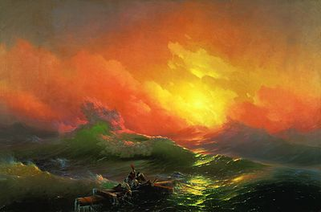

Ива́н Константи́нович Айвазо́вский — всемирно известный российский художник-маринист, баталист, коллекционер, меценат. Наиболее выдающийся художник армянского происхождения XIX века.
Картины
Радуга
Иван Константинович Айвазовский написал за свою долгую жизнь около шести тысяч картин. На протяжении более чем шестидесяти лет развития русского искусства одну из постоянных позиций в жанровом репертуаре занимали морские пейзажи Айвазовского.
Девятый вал

«Девятый вал» — одна из самых знаменитых картин русского художника-мариниста Ивана Айвазовского. Живописец изображает море после сильнейшего ночного шторма и людей, потерпевших кораблекрушение.